スキンcsvのパーツを描画する各定義は一部の例外を除いて
- #IMAGEで定義したファイルから
- #SRC_XX定義で特定範囲を切り出し、
- #DST_XX定義でLR2の画面内に貼り付けます。
この時の#SRC_XXと#DST_XXは同種の定義のセットでないと正常に動作しません。
行間を空けてその間に他の定義を記述する事も可能ですが、
例えば#SRC_IMAGEで切り出した画像はその直後に宣言された#DST_IMAGE定義でのみ使用できます。
LR2スキン定義はいくつかありますが、ここでは最も利用頻度が高い#SRC_IMAGEと#DST_IMAGE、
そしてこれらの定義でファイルを取り扱えるように#IMAGE定義を解説します。
#SRC_IMAGE定義は他のSRC定義と共通部分も多く、
DST定義に至っては全て統一されているのできっちり理解しておくと後々楽です。
※「/」から始まる行は全てコメント行です。また、行の途中でも「/」があるとそれ以降の値は読み込まれません。
読み込み高速化のためにコメントを削るスキンも増えてますが正直そこまで早くならないので残しておいた方が後々の為だと思います。
#IMAGE
#IMAGEはそのスキンで参照する画像・動画ファイルを指定する定義です。100個まで記述することが出来ます。
記述した順に0、1、2…と本体側から自動的に番号が割り当てられ、
この番号をスキン定義のgr値で指定することで、その定義で使う画像ファイルを決定します。
実際にスキン定義で使用するのはこのgr値なので、どのファイルを何番目に記述したかは常に把握しておきましょう。
仕様上、割り当てられたgr値は実際に定義を組まないと確認出来ないので、
#IMAGEを作成する際には下の画像のようにコメントとしてgr値を書き込むことをお勧めします。
せっかくなので解説に使う画像を全部分けました。
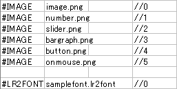
| 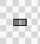 | 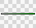 | 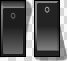 | 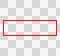 | ||
| image.png | number.png | slider.png | bargraph.png | button.png | onmouse.png |
これでこのスキンではこれらの画像ファイルを使うことが出来るようになります。
gr値の参照例
例えば#IMAGEで2番目に宣言した『number.png』を使用する定義のgr値は1、
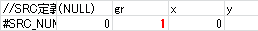
#IMAGEで5番目に宣言した『button.png』を用する定義のgr値は4になります。
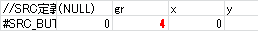
※実際にはLR2.exeからの相対パスを指定します。記述方法は既存のスキン参照。
実行ファイルからの相対パス指定はスキンで使うすべてのファイル共通ですが、
lr2fontファイルに記述する画像ファイルのみ"lr2fontファイルからの"相対パス指定になります。
また、一般的なスキンはLR2files/Themeフォルダを使いますが、配置場所に厳密な決まりはありません。
ファイルの定義は一応これで完了です。
※#IMAGEのCONTINUE宣言
#IMAGEのファイルパスにCONTINUEと記述すると1つ前のシーンで動作していたスキンの"同じ画像番号の"ファイルを引き継いで読み込みます。
再読み込みが行われないため、スキンの読み込み動作が高速化出来る、と思われがちですが
実際には直前のスキンで読み込んだパーツはCONTINUE宣言無しでも高速読み込みされるので高速化の観点からはあまり意味ありません。（安定性は多少上がります）
むしろ特定のスキンとの連携が前提となってしまい、スキン単体での汎用性が落ちるので多用は避けましょう。
関連リンク：リザルトでのプレイスキンとの連携によるクリアマーク更新分岐
#SRC_IMAGE
まずはimage.pngから「TEST」の文字を切り出してみます。
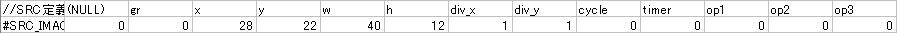
では各値を個別に。
| （NULL） | のっけからちょっとややこしいんですが、ここは無視して構いません。
定義によっては「index」となり、その場合にのみ所定の値を入力します。通常は0で。 ※スキン種別固有の特殊定義におけるindex値は こちら。 |
||
| gr | #IMAGEで定義した画像/動画の『この定義で使用するファイルの記述順番号』を指定します。
ここでは一番最初に登録したimage.pngを使うので0。 [特殊gr番号] 100：STAGEFILE 101：BACKBMP 102：BANNER 105：スキンセレクト時のサムネ 110：黒1ドット 111：白1ドット ※試したことはありませんが、おそらく100個までしか使えないという事だと思います。 関連リンク：コースモードでは使えない機能 |
||
| xywh |
SRC画像内の切り出し座標を指定します。指定範囲は右図参照。
※xyでは負の値は使えません。
|
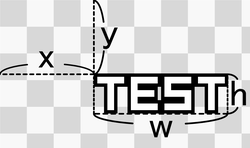 |
|
| div_x div_y |
画像パーツの横方向と縦方向の分割数を指定します。
例えばここでdiv_x=4にすると横に4分割され、T→E→S→Tの4コマアニメーションになります。
関連リンク：div_x・div_yパラメータ |
||
| cycle | div分割アニメーションの再生周期をms単位で指定します。1周に掛かる時間を決めるので再生速度がこれで決まります。
上記の横4分割を例に取ると、cycle=2000で1文字500msずつ表示され、 計2000msで1周し最初のTに戻って以降繰り返しとなります。ここでは0。 ※div分割アニメーションは基本的に停止させることが出来ません。 |
||
| timer | div分割アニメーション（cycle値）の動作開始timerを指定します。利用可能なtimer値はスキン関連ドキュメント内timer.txt参照。
※リズムタイマー以外で使うことはあまりないと思います。 |
||
| op1〜3 | 利用出来ません。（仕様書には「予約」と書いてあります。おそらく未実装） | ||
これで「TEST」と描かれた画像を切り出して読み込んだ状態です。
画像の切り出しはこれで完了。
#DST_IMAGE
続いて、LR2画面内への貼り付けです。
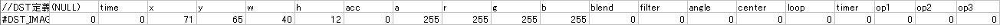
| （NULL） | SRCと同じです。通常は0で。 |
|
|
| time |
DST定義側のtimerで指定した条件を満たしてからの動作時間を指定します。単位はms。
|
||
| xywh |
LR2画面内の貼り付け座標を指定します。指定範囲は右図参照。 640x480の範囲に収めないと画面に表示されませんが、SRCと違ってxy値に負の値が使えます。
|
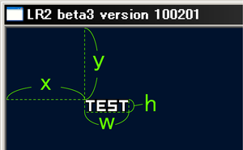 |
|
| acc | 後述するloop値の解説にあるようなDST定義のパラメータ変化に対する加速度を指定します。
あくまでも座標移動や透明度・色合い等のDST定義で指定出来るパラメータの時間的な変化に対する加速度指定であり、 動画やdiv分割アニメーションの再生速度を指定する値ではありません。 （そもそもLR2では動画の再生/停止制御は出来ません。表示のON/OFFのみ） 0：等速 1：加速 2：減速 3：不連続 ※滅多に使いません。あと意外と癖が強いのでおそらく思い通りの挙動にはなりません。 |
||
| a |
パーツの透明度を指定します。（0〜255）
|
||
| rgb |
パーツの色を指定します。（0〜255）
|
||
| blend |
画像編集ソフトで言うところの「レイヤーの合成モード」です。
※フェードインやフェードアウトを使う場合はとりあえず「1」使っておけば失敗しにくいです。 |
||
| filter | 拡縮時のぼかしフィルタです。拡縮しない場合は画像がぼやけるだけです。割と重いらしいです。
0：無し 1：有り 関連リンク：拡大縮小とfilter値 |
||
| angle | パーツの回転角度を指定します。回転の中心はcenter値で指定します。360で1周。 | ||
| center | パーツ回転時の中心を指定します。10キー配列に対応しており、例えば3なら画像右下を中心に回転します。
0の場合はパーツの真ん中になります。（5と同じです） 中心点のpx単位での座標指定は出来ないので、回転軸を指定したい場合は狙った点が中心となるようにSRC範囲を取る必要があります。 |
||
| loop |
この画像パーツにおける全DST定義行の動作が終わった時の「繰り返す時間」を指定します。ちょっとややこしいので具体例を。
適当なflash作ってみましたが再生ボタンとか入れてないので、最初から再生させたい場合はページごとリロードして下さい。 timeによって透明度だけが変化する全2行のDST定義があったとします。 この時、loop=1000では動作開始から1秒間でフェードインしてそのまま表示され続けます。（time=1000を繰り返します） |
||
| timer | 値自体はSRC側のtimerと同じようなものですが、DST側のtimer値はDST定義のtime値の基準タイマーになります。
例えば「timer48 1Pフルコンタイマー」の48を指定した場合、フルコンした瞬間がこの画像パーツにとっての「time=0」になり、 そこから指定したタイミングでDST定義の動作が始まります。 大体のパーツでは「timer0 スキン動作開始」が使われるため、timeを変えることで動作時間を変えることが出来ますが、 同じtime=0であってもtimerが異なる場合は動作開始タイミングが違うので気を付けましょう。 ※1つのDST定義で1度しか指定できません。 |
||
| op1〜3 | 表示条件となるDSTオプション値を指定します。利用可能なop値は右表参照。
例えば「op50 オフライン」の50を入力するとオフライン時に表示される、といった形になります。 3つまで定義可能ですがこれらはAND条件になっており、複数定義した場合は全ての条件を満たした場合のみ動作します。 また、!50や-50で否定（NOT条件）になります。 ※dstオプションには「op51 オンライン」があるのでop51=op!50=op"-50"になります。 ※1つのDST定義で1度しか指定できません。 |
||
| op4
|
スクラッチの回転に合わせて回転させることができる特殊オプションです。通常は使用しません。
いわゆるターンテーブルマスコット以外で使うことはないでしょう。 1：1P側スクラッチ 2：2P側スクラッチ |
||
貼り付けはこれで完了です。
SRCとDSTを合わせるとよくあるLR2スキンcsvの定義になります。
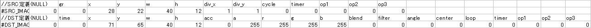
各パーツの重ね順
LR2スキンcsvではcsv内で先に記述した定義から順に描画されていきます。
画像Aと画像Bという2つの定義を重ねて表示する場合、
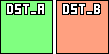
csv内で画像A定義を先に記述するとこうなります。
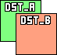
また、1つのスキンで1つしか使えない定義を複数個宣言した場合は一番最後の定義が適用されます。
IMAGE定義テンプレート
カンマ区切り
タブ区切り
パラメータ早見表
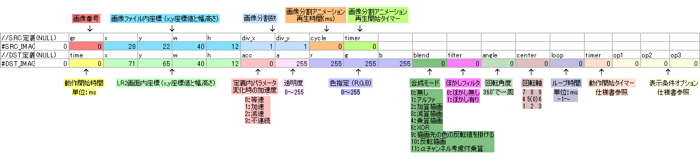
アニメーションサンプル
スキンcsvのパラメータを使ってアニメーションさせる場合、複数のDST行が必要になります。
それぞれの行でパラメータの値が変化すると、その間の値が自動的に補間されます。
先のloop値を用いた点滅アニメーションなどでも使うため、非常に重要な特性と言えます。
各パラメータによる画像変化例を以下に纏めます。何となくでも覚えておくと色々幅が広がると思います。
アニメーション無し
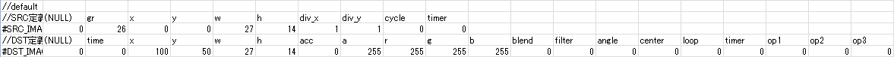
座標移動
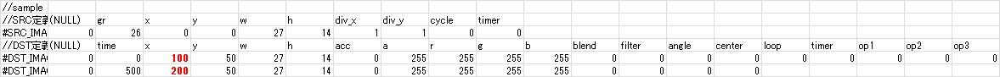
色変更
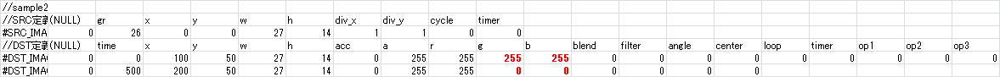

回転
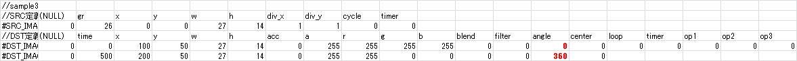
透明度
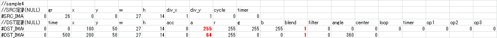

加速度
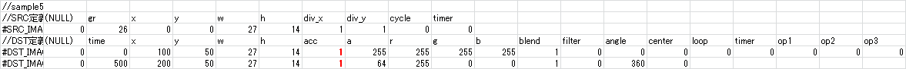
拡大・縮小

補間無し
acc値は細かい指定が出来ないので、パーツを急激に動かしたい場合は1ms間隔でtimeを切るかdiv分割アニメーションにする必要があります。
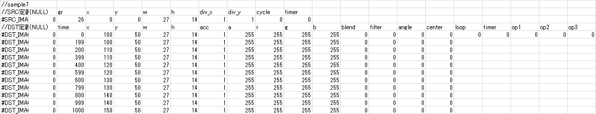